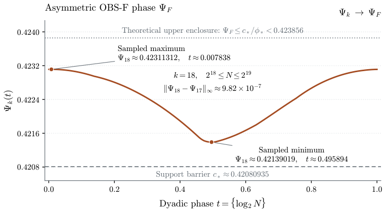

Scalar and combinatorial statements for all theorems, lemmas, and corollaries are formalized in Lean 4/Mathlib, with AI assistance, and kernel-checked.
Abstract
Predetermined stepsize schedules featuring carefully chosen long steps have recently been shown to accelerate gradient descent (GD) on smooth convex functions. A prominent class of such schedules is built through recursive composition. In this paper, we characterize the convergence of these optimized recursive schedules, revealing a non-constant log-periodic modulation across prescribed horizons. Specifically, for symmetric recursive frameworks (primitive and OBS-S constructions), we prove that for every $N \geq 1$, the corresponding optimized schedules satisfy $f(x_{N-1})-f^\ast \le \frac{1}{2N^p Φ(\log_2N)-1} \frac{L}{2}\|x_0-x^\ast\|^2$, $ p=\log_2(1+\sqrt2)$, where $Φ$ is a positive, Lipschitz, nonconstant $1$-periodic function. We derive this by proving that balanced splitting is optimal at every horizon for these constructions, resolving a conjecture of Zhang and Jiang. Furthermore, for the asymmetric framework (the OBS-F construction), we show that although optimal splits are not necessarily balanced, the same Silver exponent asymptotically persists alongside a distinct log-periodic modulation.
Problem
Recursive composition schedules of predetermined long stepsizes accelerate gradient descent on smooth convex functions, but their exact convergence behavior across horizons was not characterized. A conjecture of Zhang and Jiang that balanced splitting is optimal was also open.
Approach
A sharp four-point rearrangement theorem is proved for the binary composition law. Combined with an abstract balanced-composition principle, it shows that balanced splits solve the Bellman recursion for the primitive and OBS-S constructions. Exact dyadic scaling then yields a periodic phase function. The asymmetric OBS-F recursion is analyzed by comparison with the symmetric sequence, a compactness argument, and a support analysis. Scalar and combinatorial statements are formalized in Lean 4/Mathlib and checked by the kernel.
Results
For symmetric constructions, f(x_{N-1})-f* ≤ L||x0-x*||²/(2(2N^p Φ(log2 N)-1)) with p=log2(1+√2), where Φ is a positive, Lipschitz, nonconstant 1-periodic function. This resolves the Zhang–Jiang conjecture and fully describes the optimizer set. For OBS-F, optimal splits need not be balanced, but the same Silver exponent persists with a distinct nonconstant Lipschitz log-periodic phase.

Figure 2: Numerical approximation of the asymmetric OBS-F phase \Psi_{F} by the interpolant \Psi_{18} from Section 6.2 . Its nodes are N^{p}\eta^{\mathrm{F}}_{N} for 2^{18}\leq N\leq 2^{19} , computed by exhaustive optimization over all ordered splits in the Bellman recursion. The annotated extrema belong to this finite-scale interpolant. The dashed line is the support barrier c_{*}\approx 0.42080